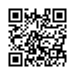

2Tube
「2Tube」は携帯電話で撮った動画をYoutubeへアップロードするWebサービスです。
保存した動画をメールに添付する必要が無く、
携帯電話からYoutubeへダイレクトに動画をアップロードできます。
びっくり映像の撮影、ビデオブログなどの用途に使えると思います。
FOMA 700/800/900iシリーズ以降の携帯電話で動作いたします。
本サービスは無料にてご利用いただけます。
※携帯電話の通信料は無料ではありません。
FOMAの機種によっては動作しない場合もあります。
2Tubeのご利用にはパケット定額制サービスへのご加入を推奨いたします。
ご利用方法
携帯電話からQRコードにてアクセスし、iアプリをダウンロードしてください。

操作方法

Youtubeのアカウントを入力します。
決定キーでメール(ユーザ名でも可)、パスワードを入力できます。
上下キーでカーソルを上下に移動できます。
※メールアドレスはサーバに保存しません。
安心してご利用ください。

決定キーでコメントを入力できます。
上下キーでカーソルを上下に移動できます。
左右キーにてカテゴリ、動画撮影・選択、サイズの変更ができます。
ソフトキーにて操作を決定するか、キャンセルできます。
数字キー1でYoutubeモバイルのサイトへ移動します。
数字キー2で撮影した動画を再生します。
動画は送信後、Youtubeに登録されます。
連絡事項
09.07.20 Ver 0.1 をリリースしました。
09.07.28 Ver 0.2 ログイン画面、Mail→UserNameに変更しました。